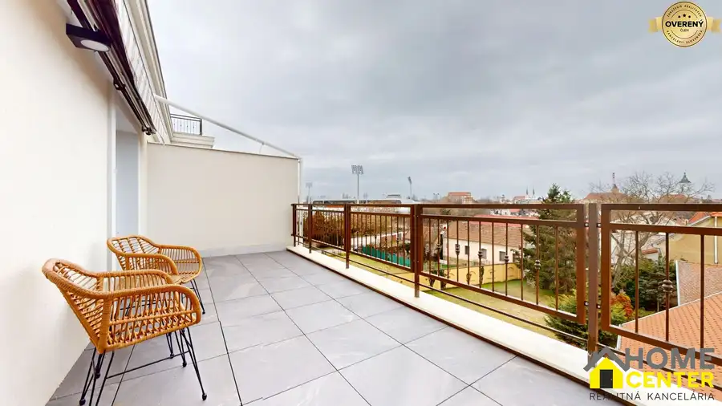
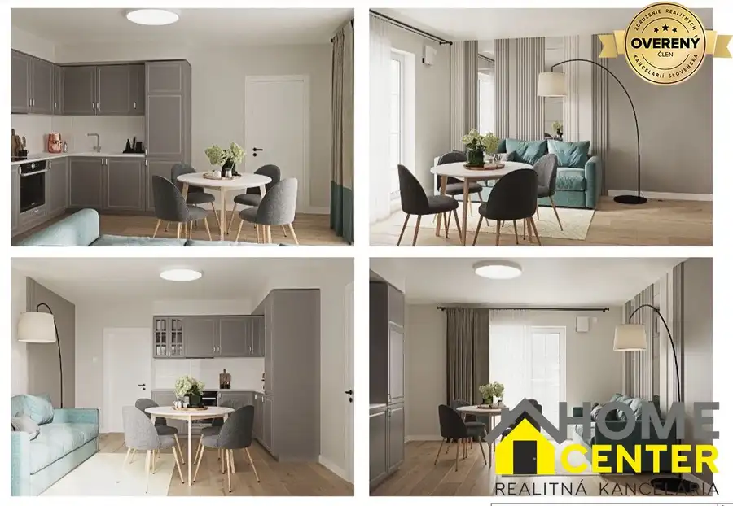
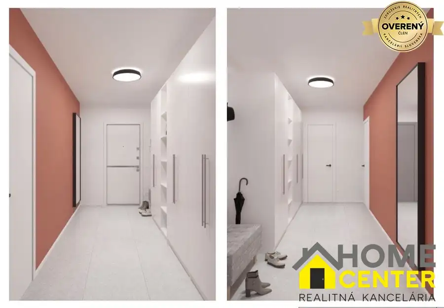

PREDANÉ!!
Iža
- Dispozícia4-izbový
- Plocha100 m²
- Poschodie0.
- Stavúplne prerobený
- Vlastníctvoosobné
O nehnuteľnosti
Patrik Hegedűs – realitný maklér pre Komárno a okolie
vám ponúka na predaj jedinečný
rodinný dom v obci Iža
, ktorý spája
pokojné bývanie, súkromie a výbornú dostupnosť do Komárna.
Dom sa nachádza na
úplnom konci slepej ulice
, kde stojí iba tento jediný rodinný dom. Vďaka tejto výnimočnej polohe ponúka
absolútny pokoj bez rušnej premávky, maximálne súkromie a príjemné rodinné bývanie.
Ak hľadáte
domov, nie iba nehnuteľnosť
, táto ponuka si určite zaslúži vašu pozornosť.
Základné informácie:
*
Úžitková plocha domu: 100 m²
*
Výmera pozemku: 1 353 m²
*
Garáž pre jedno osobné vozidlo
*
Všetky stavby sú riadne zapísané na liste vlastníctva
(garáž, altánok aj dielňa)
Technický stav domu:
*
Kompletná elektroinštalácia menená v roku 2018
*
Kompletné rozvody vody vrátane potrubí
*
Nové radiátory v celom dome
*
Nový kotol
*
Hliníkové okná a dvere s trojsklom
*
Sadrokartónové stropy v celom dome
*
Dve studne
*
Žumpa
Dispozičné riešenie:
Rodinný dom ponúka
praktickú dispozíciu vhodnú pre pohodlné rodinné bývanie.
Dispozícia pozostáva z:
*
vstupná chodba
*
samostatné WC
*
kúpeľňa s vaňou aj sprchovým kútom
*
detská izba
*
obývacia izba
*
jedáleň
*
kuchyňa so špajzou
*
spálňa
Kuchyňa ponúka možnosť budúcej úpravy podľa predstáv nového majiteľa.
Špajza sa nachádza priamo za kuchyňou a
deliaca stena nie je nosná
, preto je možné
kuchynský priestor jednoducho zväčšiť a vytvoriť modernejší otvorený priestor.
V
obývacej izbe
sa nachádza kvalitná
vinylová podlaha
. V
jedálni a kuchyni
je pripravený rovnaký vinyl, ktorý je už zakúpený. V ostatných miestnostiach sa nachádzajú
parkety a dlažba.
Súčasťou domu sú
dve pivnice:
*
vínna pivnica
vhodná na uskladnenie vína
*
technická pivnica pod domom
s kotlom a úložným priestorom
Ďalšie stavby a vybavenie na pozemku:
*
altánok postavený v roku 2023
*
garáž
*
samostatná dielňa
*
veľký pozemok s množstvom možností využitia
Dom sa predáva zariadený.
Majitelia si ponechajú iba osobné veci a detské hračky. Ostatné zariadenie zostáva
po dohode
, takže nový majiteľ sa môže
nasťahovať bez potreby veľkých okamžitých investícií.
Lokalita:
Obec Iža
patrí medzi vyhľadávané lokality v blízkosti
Komárna
. Ponúka kompletnú občiansku vybavenosť –
materskú školu, základnú školu, potraviny, lekáreň a ďalšie služby.
Vďaka
výbornej dostupnosti do Komárna
získate
pokojné bývanie na vidieku bez kompromisov.
Ak hľadáte
rodinný dom s veľkým pozemkom, maximálnym súkromím, praktickou dispozíciou a výborným technickým stavom
, táto nehnuteľnosť určite stojí za vašu pozornosť.
Pre viac informácií alebo dohodnutie obhliadky ma neváhajte kontaktovať.
Cena: 155 000€
Patrik Hegedűs
Parametre
| Rozloha pozemku | 1353 m² |
|---|---|
| Zastavaná plocha | 100 m² |
| Celková rozloha | 1353 m² |
| Úžitková plocha | 100 m² |
| Poschodie | prízemie |
| Počet izieb | 4 |
| Vlastníctvo | osobné |
| Stav | úplne prerobený |
| Odvoz odpadu | áno - separovaný |
| Voda | verejný vodovod |
| El. napätie | 230/400V |
| Plyn | áno |
| Kanalizácia | žumpa |
| Kúpeľňa | vaňa a sprchovací kút |
| Vykurovanie | áno |
| Terasa | áno |
| Pivnica | áno |
| Garáž | áno - 1 auto |
| Parkovanie | vlastné vyhradené |
| Postavené z | tehla |
| Zariadenie | zariadený |
| Energetický certifikát | nie |
| Predzáhradka | áno |
| Okná | hliníkové |
| Terén | rovina |
| Prístupová cesta | betónová cesta |
| Dátum zverejnenia | 19. 7. 2026 |
Kde to je
Mohlo by Vás zaujímať

Byt5 106 493 €NA PREDAJ 1 izbový byt v projekte Danube Residence v Komárne Komárno 1-izbový47.47 m²1. podlažie Patrik Hegedűs – realitný maklér pre Komárno a okolie, vám ponúka na predaj modernú novostavbu jednoizbového bytu nachádzajúcu sa v projekte Danube…
Byt5 209 100 €NA PREDAJ 3 izbový byt v projekte Danube Residence v Komárne Komárno 3-izbový95.91 m²1. podlažie modernú novostavbu trojizbového bytu nachádzajúcu sa v projekte Danube Residence v Komárne. Byt je situovaný na prvom poschodí a jeho veľkou výhodou…
Byt6 130 157 €NA PREDAJ 2 izbový byt v projekte Danube Residence v Komárne Komárno 2-izbový52.4 m²2. podlažie modernú novostavbu dvojizbového bytu nachádzajúcu sa v projekte Danube Residence v Komárne. Byt je situovaný na druhom poschodí a jeho veľkou výhodou…